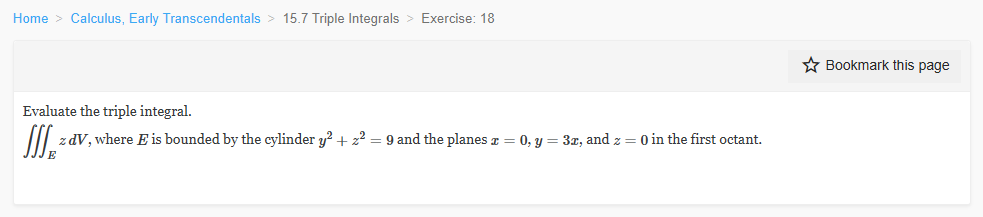
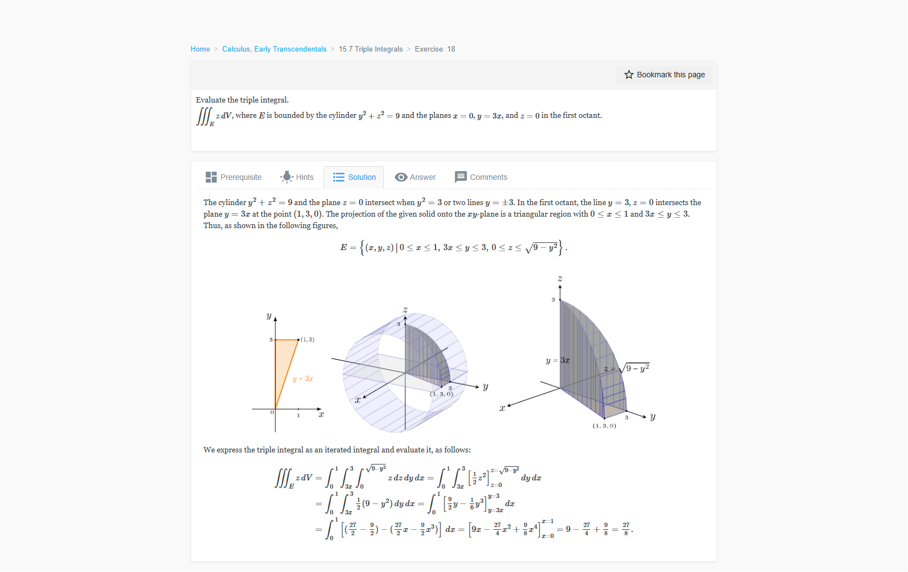

📚 Canonical solution — calculus-15.7.18
Reference scan from the canonical set. The problem scan is identical to the one in both recipe folders.
❓ Problem

✅ Reference solution

Reference scan from the canonical set. The problem scan is identical to the one in both recipe folders.

